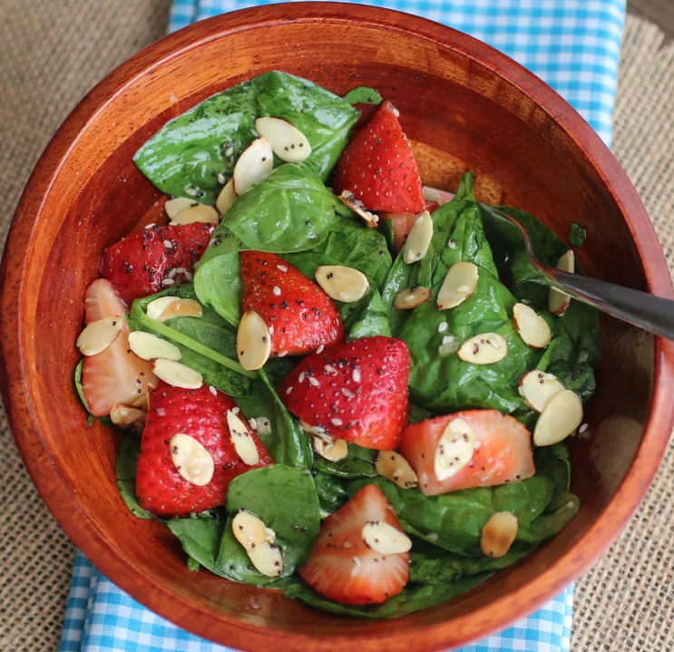

Strawberry Spinach Salad I

vStrawberry Spinach Salad I
For most of the country, June is when strawberries are in their peak season, and it's time to start incorporating strawberries in all our recipes
This salad balances sweet and savory. The homemade dressing can be tossed over the salad a few minutes before serving, making it a great make-ahead dish and easy to carry for a potluck gathering.
Ingredients
- ½ cup white sugar
- ½ cup olive oil
- ¼ cup distilled white vinegar
- 2 tablespoons sesame seeds
- 1 tablespoon poppy seeds
- ⅛ teaspoon freshly grated nutmeg
- 1 tablespoon minced onionr
- ¼ teaspoon paprika
- ¼ teaspoon Worcestershire sauce
- 2 limes, cut into wedges
Steps
- Make dressing: Whisk together sugar, oil, vinegar, sesame seeds, poppy seeds,
onion, paprika, and Worcestershire in a medium bowl. Cover and chill for 1 hour.
- Make salad: Combine strawberries, spinach, and almonds in a large bowl.
- Pour dressing over salad; toss to coat. Refrigerate for 10 to 15 minutes before serving.